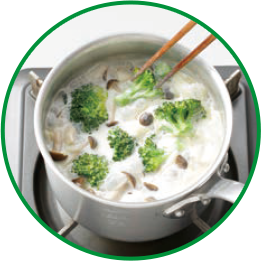
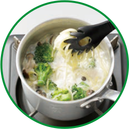

お鍋ひとつで、パスタも乾麺のまま具材と一緒に煮込むだけ。パスタで別にゆでる
手間もいりません。お鍋ひとつなので後片付けもとってもかんたんです。
鍋に水と牛乳、本品を入れ、火にかけます。
直径20cm以上の鍋。もしくは、直径27cmのフライパン。
※ほうろう鍋は焦げ付きやすいのでご注意ください。
ペンネ、フィットチーネ、早ゆでタイプもＯＫ！
沸騰したら、半分に折ったパスタと、食べやすい大きさに切った具材を入れて煮込みます。
パスタをまんべんなく湯がくため、スープに浸るように入れてください。

煮込み時間の目安 約10分（弱火〜中火）
具材に火が通り、パスタがお好みの硬さになるまで煮込みます。

煮込み時間の目安 約10分（弱火〜中火）
具材に火が通り、パスタがお好みの硬さになるまで煮込みます。
パスタがくっつかないように時々かき混ぜてください。
※水分が多い場合は、強火でよくかき混ぜながら水分を飛ばしてください。
※４人分を作る時は、本品を２袋使用し、鍋や水分量は下記にならって調理してください。
４人前を作る時は、本品を２個使用し、鍋や水分量は下記にならって調理してください。
直径22cm以上の鍋。もしくは、直径27cmの深型フライパン。
※ほうろう鍋は焦げ付きやすいのでご注意ください。
水分量は2人前の1.5倍。
[なめらかクリーム味]牛乳300ml、水300ml
[だし醤油味][コクのトマト味] 水600ml
早ゆで3分タイプ
煮込み始めから7分でパスタを入れる
早ゆで6分タイプ
煮込み始めから4分でパスタを入れる